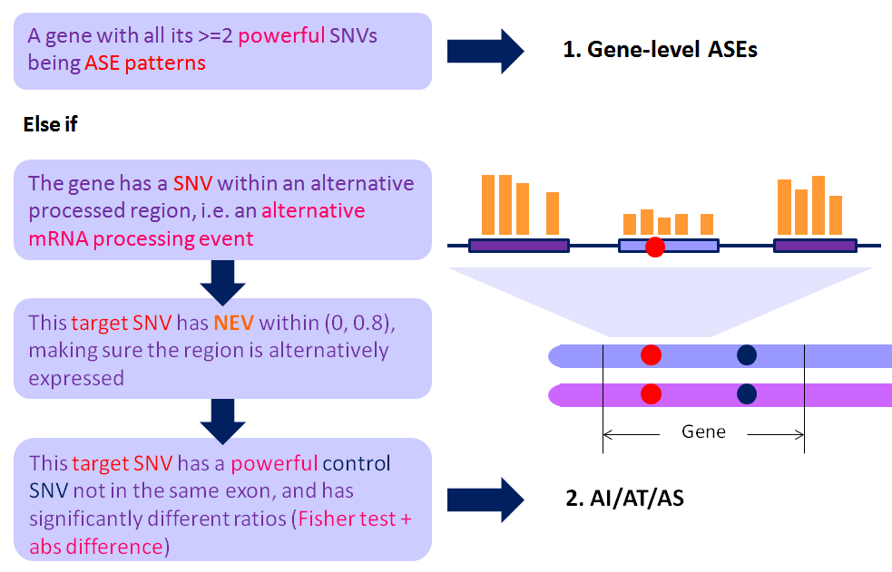

NAME
asarp.pl -- The new and improved ASARP pipeline to discover ASE/ASARP genes/SNVs, wchih now supports strand-specific RNA-Seq data.
For details of the older version, refer to the paper: Li G, Bahn JH, Lee JH, Peng G, Chen Z, Nelson SF, Xiao X. Identification of allele-specific alternative mRNA processing via transcriptome sequencing, Nucleic Acids Research, 2012, 40(13), e104 and its Supplementary Materials. Link: nar.oxfordjournals.org

SYNOPSIS
perl asarp.pl output_file config_file [optional: parameter_file]
NEW: the ASARP pipeline now supports strand-specific RNA-Seq data (which can be processed by the new pre-processing script: procReads. One can set the optional strand-specific flag in the cnofig file. IMPORTANT: the strand-specific option does not work correctly on non-strand-specific data.
output_file is where the ASARP result summary is output, and meanwhile there will be 4 addtional detailed result files output:
output_file.ase.prediction-- the detailed results of (whole-gene-level) ASE patterns (exclusive to other ASARP patterns: AI, AS or AT)output_file.gene.prediction-- the detailed results of ASARP results (ASE patterns excluded) arranged by genesoutput_file.snv.prediction-- the detailed results of ASARP results (ASE patterns excluded) of each individual SNVoutput_file.controlSNV.prediction-- the control SNV information of each individual ASARP SNV
config_file is the input configuration file which contains all the input file keys and their paths. The format is <key>tab<path>. Line starting with # are comments. Example: ../default.config
For preparation of the input files used in config_file, see the pre-processing section: rmDup, mergeSam, procReads
parameter_file is the parameter configuration file which contains all the thresholds and cutoffs, e.g. p-value cuttoffs and bounds for absolute allelic ratio difference. The format of each line is <parameter>tab<value>. Lines starting with # are comments. It is optional and the default is: ../default.param
-I USAGE
Because asarp.pl requires other perl files in the same folder to run, -I path can be used if one would like to run ASARP elsewhere by adding its path.
perl -I path path/asarp.pl output_file config_file parameter_file
Note that in such a case, one should be careful of the locations of the config and parameter files. Abosulute paths are suggested for the files in config_file.
See below for the terminology and the overview.
DESCRIPTION
TERMINOLOGY
Allele-Specific Alternative RNA Processing (ASARP) types:
- ASE: Allele-Specific Expression, a single SNV is called to have an ASE pattern if its allelic ratio significally diverges from 0.5 (in other words 1:1 for Ref:Alt).
- AS: Alternative Splicing;
- AI: Alternative (5'-end) Initiation;
- AT: Alternative (3'-end) Termination, or Alternative Poly-Adenylation
NEV: Normalized Expression Value, a PSI (Percent Spliced-In) like value to measure whether an event (region) is alternatively processed. For AS events, it is calculated as
NEV_sp = min (NEV_flanking, NEV_gene), whereNEV_flanking = (# event_reads/event_length)/(# flanking_region_total_reads/flanking_region_total_length), andNEV_gene = (# event_reads/event_length)/(# gene_constitutive_exon_reads/gene_constitutive_exon_length)
*_length means the total number of positions within the * region with non-zero reads.
OVERVIEW
The procedures (rules) for ASARP are illustrated in the following figure and terminology explained below:

How to categorize ASARP patterns into specific AI/AS/AT and/or combinations of them can be found in snpParser.
The ASARP Pipeline
There are basically 3 steps.
1. parse the input files and compile alternative mRNA processing events. see fileParser
2. get the SNVs and match them with the events. see snpParser
3. process ASARP (including ASE) patterns and output the formatted results. see source and snpParser
Look into the source: ../asarp.pl for more details and it is self-explanatory.
REQUIREMENT
Statistics::R: has to be installed. See search.cpan.org
SEE ALSO
fileParser, snpParser, MyConstants
COPYRIGHT
This pipeline is free software; you can redistribute it and/or modify it given that the related works and authors are cited and acknowledged.
This program is distributed in the hope that it will be useful, but without any warranty; without even the implied warranty of merchantability or fitness for a particular purpose.
AUTHOR
Cyrus Tak-Ming CHAN
Xiao Lab, Department of Integrative Biology & Physiology, UCLA